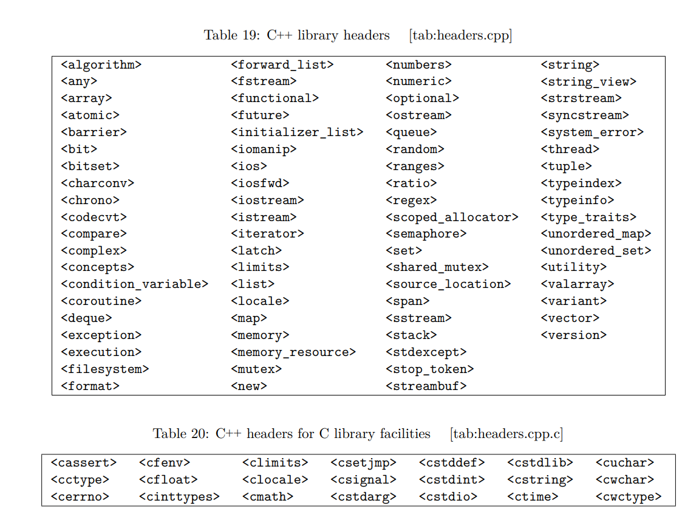
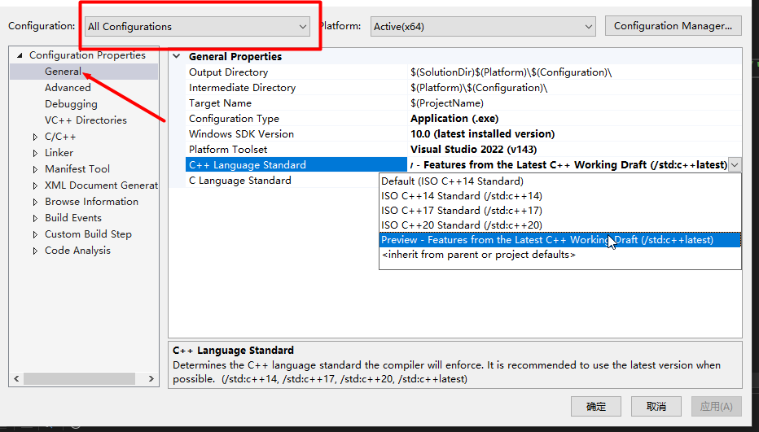
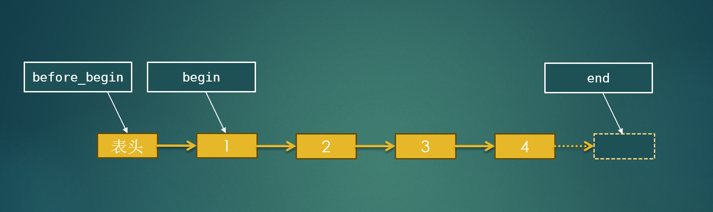
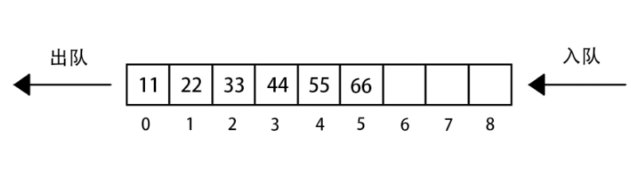

C++标准库是什么？
C++标准库是一系列类和函数的集合，属于C++标准的一部分，只要支持C++标准的环境中就可以直接使用。内容丰富，功能强大。对初学者来说也是很好的提升C++技能的学习材料。
C++标准库主要包括C++库和C语言库，头文件如下图所示。
C++标准库都定义在命名空间std中。

本课程的目的是带领大家了解一下C++标准库，因此讲解不会太深入，只是大致过一遍让大家知道有这么个东西。上面图片中的内容也不会全部涉及，如有需要的可以自行深入研究。
环境准备
安装的环境要能支持C++20以上的版本。能支持C++23最好。如果某个类或方法编译报错，则需要检查一下是哪个版本的C++才支持的，看看当前使用的版本是否支持
Visual Studio
安装器下载地址：https://visualstudio.microsoft.com/zh-hans/downloads/
下载Community 版本的，不需要激活码。
以Microsoft Visual Studio Community 2022 为例，新建项目之后，在项目 **属性(Properties)-->通用(General)-->C++语言标准(C++ Language Standard)**选择Preview版本即可支持C++23的特性。

GCC(MinGW)
MinGW推荐以下两个版本，选择其中一个即可。w64devkit提供的工具更多，操作更接近Linux。
w64devkit：https://github.com/skeeto/w64devkit/releases
mingw-builds：https://github.com/niXman/mingw-builds-binaries/releases
在编译时，使用**-std=...**指定需要使用的C++版本，例如：
g++ -o <outputname> <sourcefile.cpp> -std=c++20可使用的C++标准有：c++98 c++11 c++14 c++17 c++20 c++23
学习参考
cppreference中文版：https://zh.cppreference.com/
cppreference英文版：https://en.cppreference.com/
cplusplus：https://cplusplus.com/
learncpp：https://www.learncpp.com/
hackingcpp：https://hackingcpp.com/
C语言库
| C++头文件 | C语言头文件 | 内容 |
|---|---|---|
| cstdio | stdio.h | 提供通用文件操作并提供有字符输入/输出能力的函数。 |
| cmath | math.h | 常用数学函数 |
| cstring | string.h | 字符串处理函数和一些内存操作函数 |
| cstdlib | stdlib.h | 基础工具库：动态内存管理、程序支持工具、随机数、算法、字符与数字转换 |
| cctype | ctype.h | 字符分类与大小写转换函数库 |
| cinttypes | inttypes.h | 整数类型格式宏常量 |
| clocale | locale.h | 本地化工具库 |
| cstdarg | stdarg.h | 变参数函数工具库 |
| cstdint | stdint.h | 定宽整数类型及宏常量定义 |
| ctime | time.h | 时间和日期工具 |
| cassert | assert.h | 断言工具库 |
| cerrno | errno.h | 错误号定义与错误处理 |
| cfenv | fenv.h | 浮点环境函数与宏 |
| cfloat | float.h | 浮点类型极限宏定义 |
| climits | limits.h | 整数类型一些宏定义 |
| csetjmp | setjmp.h | 非局部跳转 |
| csignal | signal.h | 几个为信号管理的函数和常量宏 |
| cstddef | stddef.h | 附加基本类型及便利宏 |
| cuchar | uchar.h | UTF-16 和 UTF-32 字符工具 |
| cwchar | wchar.h | 扩展多字节和宽字符工具 |
| cwctype | wctype.h | 用来确定包含于宽字符数据中的类型的函数 |
字符串
basic_string与string
C++当中基本数据类型没有字符串，需要处理字符串时用的是字符数组，操作起来相当不方便，因此在C++标准库中提供了一个字符串类std::string，将字符串的一些基本操作封装到类中，简化了字符串的操作。
string类的定义如下：
typedef basic_string<char> string;可以看到，string类由模板类basic_string类型为char时定义而来，因此要学习string有哪些操作，需要学习basic_string。
构造
#include <iostream>
#include <string>
using namespace std;
int main()
{
// 用char*赋值构造
string str1 = "北国风光，千里冰封，万里雪飘";
cout << "str1 = " << str1 << endl;
string str2("望长城内外，惟馀莽莽");
cout << "str2 = " << str2 << endl;
// 无参构造，构造一个空字符串，构造之后可以通过 = 进行赋值
string str3;
cout << "str3 = " << str3 << endl;
// 用指定字符重复指定次数填充构造
string str4(10, 'H');
cout << "str4 = " << str4 << endl;
// 拷贝构造
string str5(str2);
cout << "str5 = " << str5 << "\t\t" << "str2 = " << str2 << endl;
// 移动构造
string str6(move(str5));
cout << "str6 = " << str6 << "\t\t" << "str5 = " << str5 << endl;
// 指定字符范围进行构造
string str7(str1, 3);
string str8(str1, 3, 9);
cout << "str7 = " << str7 << endl << "str8 = " << str8 << endl;
// assign
string str9 = "大河上下";
str9.assign(str2);
cout << "str9 = " << str9 << endl;
// 字符串拼接
string str10 = str1 + str2;
cout << "str10 = " << str10 << endl;
str10 += "只识弯弓射大雕";
cout << "str10 += " << str10 << endl;
return 0;
}
元素访问
#include <iostream>
#include <string>
using namespace std;
int main()
{
string str1 = "Hello World";
string str2 = "人生易老天难老，岁岁重阳";
// at与[]
string str10 = "Hello World kkkkddd";
cout << "[] " << str1[10] << endl;
cout << "at " << str1.at(3) << endl;
str1.at(3) = 'K';
str1[10] = 'a';
cout << "str1 = " << str1 << endl;
// front back
cout << "front() = " << str1.front() << endl;
cout << "back() = " << str1.back() << endl;
// c_str data
cout << "c_str() = " << str1.c_str() << endl;
cout << "data() = " << str1.data() << endl;
return 0;
}
容量
#include <iostream>
#include <string>
using namespace std;
int main()
{
string str1 = "漫天皆白，雪里行军情更迫";
string str2 = "Hello Worldddddd";
string str3;
// empty
cout << str1.empty() << endl;
cout << str3.empty() << endl;
// size length
cout << "str1.size() = " << str1.size() << "\tstr1.length() = " << str1.length() << endl;
cout << "str2.size() = " << str2.size() << "\tstr2.length() = " << str2.length() << endl;
cout << "str3.size() = " << str3.size() << "\tstr3.length() = " << str3.length() << endl;
// max_size
cout << "str1.max_size() = " << str1.max_size() << endl;
cout << "str2.max_size() = " << str2.max_size() << endl;
cout << "str3.max_size() = " << str3.max_size() << endl;
// capacity
cout << "str1.capacity() = " << str1.capacity() << endl;
cout << "str2.capacity() = " << str2.capacity() << endl;
cout << "str3.capacity() = " << str3.capacity() << endl;
// reserve
str2.reserve(100);
cout << "str2.size() = " << str2.size() << "\t\t" << "str2.capacity() = " << str2.capacity() << endl;
str2.reserve(10);
cout << "str2.size() = " << str2.size() << "\t\t" << "str2.capacity() = " << str2.capacity() << endl;
// shrink_to_fit
str2.shrink_to_fit();
cout << "str2.size() = " << str2.size() << "\t\t" << "str2.capacity() = " << str2.capacity() << endl;
// resize
str2.resize(120);
cout << "str2.size() = " << str2.size() << "\t\t" << "str2.capacity() = " << str2.capacity() << endl;
str2.resize(10);
cout << "str2.size() = " << str2.size() << "\t\t" << "str2.capacity() = " << str2.capacity() << endl;
return 0;
}
迭代器
迭代器是一种遍历接口，一般是为容器类(如链表、队列等。string类也是一种容器)提供统一的遍历接口，使用人员无需关心容器内存分配与管理细节。
C++标准库中容器的迭代器分为四种：普通迭代器（简称迭代器） iterator、只读迭代器 const_iterator、反向迭代器 reverse_iterator、反向只读迭代器 const_reverse_iterator。
#include <iostream>
#include <string>
using namespace std;
int main()
{
string str = "Hello World";
// 普通迭代器， 可用来读写
string::iterator iter = str.begin();
// auto iter = str.begin();
for(; iter != str.end(); iter++)
{
cout << *iter << "\t";
*iter = 'A' + (iter - str.begin());
}
cout << endl << str << endl;
// 只读迭代器
string::const_iterator citer = str.cbegin();
for(; citer != str.cend(); citer++)
{
cout << *citer << "\t";
}
cout << endl;
// 反向迭代器
string::reverse_iterator riter = str.rbegin();
for(; riter != str.rend(); riter++)
{
cout << *riter << "\t";
*riter = 'B' + (riter - str.rbegin());
}
cout << endl << str << endl;
// 反向只读迭代器
string::const_reverse_iterator criter = str.crbegin();
for(; criter != str.crend(); criter ++)
{
cout << *criter << "\t";
}
return 0;
}
插入
#include <iostream>
#include <string>
using namespace std;
int main()
{
string str = "Hello World";
string str2 = "STRING2";
// 在指定位置开始重复插入指定次数的单个字符
str.insert(2, 5, 'A');
cout << str << endl;
// 在指定位置开始插入字符串
str.insert(5, "This is A New Insert");
cout << str << endl;
// 在指定位置插入另一个string
str.insert(10, str2);
cout << str << endl;
// 在指定位置插入另一个string指定范围内的内容（起始位置，字符数）
str.insert(0, str2, 2, 2);
cout << str << endl;
// 在结尾处插入一个字符
str.push_back('R');
cout << str << endl;
// 在结尾处追加：可以是单个字符、字符串、string，可以指定追加范围和追加字符数量
str.append("What to do?");
cout << str << endl;
return 0;
}
删除
#include <iostream>
#include <string>
using namespace std;
int main()
{
string str = "Hello World";
string str2 = "STRING2";
// 清除全部内容
str2.clear();
cout << str2 << endl;
// 删除最后一个字符
str.pop_back();
cout << str << endl;
// 删除指定索引与数量的字符
str.erase(2, 2);
cout << str << endl;
// 删除指定迭代器范围内的字符
str.erase(str.begin() + 1, str.end() - 2);
cout << str << endl;
return 0;
}
检测与比较
#include <iostream>
#include <string>
using namespace std;
int main()
{
string str = "Hello World";
string str2 = "STRING2";
// 是否以指定字符开头 可以是单个字符
cout << str.starts_with("He") << endl;
// 检测是否以指定字符串结尾 可以是单个字符
cout << str.ends_with(".jpg") << endl;
// 检测是否包含指定字符串 可以是单个字符
cout << str.contains("llo") << endl;
// 以字典序与另一个string相比，如果小于另一个返回负数，大于返回正数，内容相同返回0
cout << str.compare(str2) << endl;
// 以字典序比较两个string，内容相同返回true，否则返回false
bool cmp_result = str == str2;
cout << cmp_result << endl;
// 三路比较，返回strong_odering
strong_ordering order = str <=> str2;
// 再将order与0相比，如果order > 0， 则str > str2（字典序）
// 如果order < 0， 则 str < str2
// 如果order == 0， 则 str == str2
bool gt = order > 0;
bool lt = order < 0;
bool eq = order == 0;
cout << "gt = " << gt << endl;
cout << "lt = " << lt << endl;
cout << "eq = " << eq << endl;
// 或者用is_gt is_lt is_eq判断
cout << "is_gt " << is_gt(order) << endl;
cout << "is_lt " << is_lt(order) << endl;
cout << "is_eq " << is_eq(order) << endl;
return 0;
}
替换与子串
#include <iostream>
#include <string>
using namespace std;
int main()
{
string str = "Hello World";
string str2 = "STRING2";
// 用给定字符串或string替换指定部分 可以用起始位置索引+替换字符个数指定范围，也可以用迭代器起止指定
// 用于替换的字符串或string也可以指东圃
str.replace(2, 10, "NIHAOAHAHAHAH");
cout << str << endl;
// 指定位置以后到结束的子串
string str3 = str.substr(5);
cout << str3 << endl;
// 指定起始位置和字符数量的子串
str3 = str.substr(5, 2);
cout << str3 << endl;
return 0;
}
查找
#include <iostream>
#include <string>
using namespace std;
int main()
{
string str = "Hello World";
string str2 = "STRING2";
// 查找给定的子串(字符串或另一个string)，若存在则返回第一个符合的子串开始的位置，不存在则返回-1 (string::npos，转为有符号整型后为-1)
cout << str.find("ll") << endl;
cout << (int)str.find("WDDS") << endl;
// 可以指定开始查找的位置
cout << str.find("Wor", 5) << endl;
cout << str.find("Wor", 9) << endl;
// 用法同find， 但是从后开始查找，返回倒数第一个符合的子串开始位置，查找不到则返回string::npos
cout << str.rfind("o") << endl;
// 写不动文档了，find_first_of find_first_not_of find_last_of find_last_not_of大家有兴趣自行试一下
return 0;
}
其他操作
#include <iostream>
#include <string>
using namespace std;
int main()
{
string str = "1234ABCD";
// string转为数值
int a1 = stoi(str);
cout << a1 << endl;
// 数值转为string
string str2 = "Hello From number" + to_string(100032);
cout << str2 << endl;
// 生成字符串hash
hash<string> hs1;
cout << "hash of str = " << hs1(str) << endl;
cout << "hash of str2 = " << hs1(str2) << endl;
return 0;
}
string_view
用于解决string在参数传递时内容会复制问题，可以减少开销，提升性能。
void fun1(string str)
{
cout << "fun1 str.data() = " << (uintptr_t)str.data() << endl;
}
void fun2(string &str)
{
cout << "fun2 str.data() = " << (uintptr_t)str.data() << endl;
}
void fun(string_view sv)
{
cout << "fun string_view data() = " << (uintptr_t)sv.data() << endl;
}
int main()
{
char s[] = "西风烈，长空雁叫霜晨月";
cout << "char s[]地址 = " << (uintptr_t)s << endl;
string str(s);
cout << "str.data()地址 = " << (uintptr_t)str.data() << endl;
string str2(str);
cout << "str2.data()地址 = " << (uintptr_t)str2.data() << endl;
fun1(s);
fun1(str);
// fun2不能接收char*
fun2(str);
// fun2(s);
string_view sv1(s);
string_view sv2(str);
cout << "sv1.data()地址 = " << (uintptr_t)sv1.data() << endl;
cout << "sv2.data()地址 = " << (uintptr_t)sv2.data() << endl;
fun(s);
fun(sv1);
fun(str);
return 0;
}
容器
array
C++传统C风格的数组实际上只是一个裸数组，携带的信息很少，不像Java中的数组有边界检查以及数组大小等信息，使用的时候需要考虑的方面有很多。
std::array是C++ 11中提供的一个封装了因定大小数组容器，可以用来替代传统数组。
基本操作
#include <iostream>
#include <array>
using namespace std;
int main()
{
array<int, 10> arr = {1, 2, 3, 4, 5, 6, 7, 8, 9, 10};
array<int, 1> arr2;
// 用指定值填充数组
arr.fill(100);
// 访问元素 没有边界检查
arr[0] = 111;
cout << "arr[0] = " << arr[0] << endl;
cout << "arr[-1] = " << arr[-1] << endl;
cout << "arr[11] = " << arr[11] << endl;
// 访问元素 有边界检查
arr.at(2) = 1234;
cout << "arr.at(2) = " << arr.at(2) << endl;
// cout << "arr.at(-1) = " << arr.at(-1) << endl; // 会报错，终止程序
// cout << "arr.at(11) = " << arr.at(11) << endl; // 会报错，终止程序
// 访问第一个元素
arr.front() = 147852;
cout << "arr.front() = " << arr.front() << endl;
// 访问最后一个元素
arr.back() = 999;
cout << "arr.back() = " << arr.back() << endl;
// 访问底层数组
int *data = arr.data();
for (int i = 0; i < arr.size(); i++)
{
cout << "data[" << i << "] = " << data[i] << endl;
}
// 检查是否为空
cout << boolalpha;
cout << "arr.empty() = " << arr.empty() << endl;
cout << "arr2.empty() = " << arr2.empty() << endl;
// 大小
cout << "arr.size() = " << arr.size() << endl;
cout << "arr.max_size() = " << arr.max_size() << endl;
// for (int i = 0; i < arr.size(); i++)
// {
// cout << arr[i] << "\t";
// }
// C++ 11 之后的range循环
for (auto &a : arr)
{
cout << a << "\t";
}
return 0;
}
迭代器
遍历
#include <iostream>
#include <array>
using namespace std;
int main()
{
array<int, 10> arr = {1, 2, 3, 4, 5, 6, 7, 8, 9, 10};
array<int, 1> arr2;
// 普通迭代器
array<int, 10>::iterator iter = arr.begin();
// C++ 11之后可以用auto
// auto iter = arr.begin();
*(iter + 2) = 11111;
for(; iter != arr.end(); iter ++)
{
cout << *iter << "\t";
}
// 返回迭代器
array<int, 10>::reverse_iterator riter = arr.rbegin();
for(; riter != arr.rend(); riter++)
{
cout << *riter << "\t";
}
return 0;
}访问指针成员
#include <iostream>
#include <array>
using namespace std;
class Person
{
private:
const char * name;
int age;
public:
int number;
Person() : Person("", 0, 0) {}
Person(const char *name, int age, int number) : name(name), age(age), number(number) {}
void set(const char *name, int age, int number)
{
this->name = name;
this->age = age;
this->number = number;
}
void sayHello()
{
cout << "Hello EveryBody" << endl;
cout << "My name is " << name << endl;
cout << "And I'm " << age << " years old." << endl;
cout << "My number is " << number << endl;
cout << "\n\n" << endl;
}
};
int main()
{
// array<Person, 3> persons;
// persons[0].set("Tom", 18, 112211);
// persons[1].set("Jerry", 20, 112212);
// persons[2].set("Lee", 22, 112213);
array<Person, 3> persons = {Person("Tom", 18, 112201), Person("Jerry", 20, 112202), Person("Lee", 22, 112203)};
array<Person, 3>::iterator iter = persons.begin();
for(; iter != persons.end(); iter++)
{
cout << "NUMBER = " << iter->number << endl;
iter->sayHello();
}
return 0;
}
vector
std::vector是一个动态数组容器，可以在使用时动态修改数组大小。std::array文档
构造
#include <iostream>
#include <vector>
using namespace std;
int main()
{
// 无参构造
vector<int> vec1;
// 指定初始大小 用对应类型的0值填充
vector<int> vec2(5);
// 指定初始大小并用指定的值填充
vector<char> vec3(5, 'A');
// 初始化
vector<int> vec4 = {1, 2, 3, 4, 5, 6, 7};
// 用迭代器初始化
vector<int> vec5(vec4.begin(), vec4.end());
// 复制构造
vector<int> vec6(vec5);
// 移动构造
vector<int> vec7(move(vec6));
// 循环
for (auto &v : vec3)
{
cout << v << "\t";
}
return 0;
}insert讲解一下内存重新分配的一些知识。
就地构造
当std::vector用于存放复合数据类型（结构体、类）时，直接用insert和push_back时，会多次构造和拷贝对应的对象，因此C++ 11以后容器类加入了insert和push_back对应的**就地构造（原位构造）**的插入方法emplace和emplace_back，可以只用构造一次对象，提高性能。
emplace_back参数直接为对应类的构造函数的参数emplace第一个参数为插入位置，其余参数为对应构造函数的参数
示例：
#include <iostream>
#include <vector>
#include <string>
using namespace std;
class Person
{
private:
string name;
int age;
int number;
public:
Person() : name("none"), age(0), number(-1)
{
cout << "Person无参构造调用" << endl;
}
Person(const string name, int age, int number) : name(name), age(age), number(number)
{
cout << "Person三参构造调用" << endl;
}
Person(const Person &person) : name(person.name), age(person.age), number(person.number)
{
cout << "Person拷贝构造调用" << endl;
}
Person(Person &&person) : name(move(person.name)), age(move(person.age)), number(move(person.number))
{
cout << "Person移动构造调用" << endl;
}
Person& operator = (const Person &other) = default;
Person& operator = (Person &&other) = default;
friend ostream& operator << (ostream& , const Person& );
};
ostream& operator << (ostream& out, const Person& person)
{
return out << "{" << "name: " << person.name
<< ", age: " << person.age
<< ", number: " << person.number << "}";
}
int main()
{
vector<Person> vec;
vec.reserve(5);
vec.push_back(Person("张三", 18, 11212));
Person person("李四", 20, 1122);
vec.push_back(person);
vec.emplace_back("王五", 22, 20012);
vec.emplace(vec.begin(), "赵六", 23, 200145);
for(auto &p : vec)
{
cout << p << endl;
}
return 0;
}
forward_list
std::forward_list为单向链表。std::forward_list文档
迭代器示意图

单向链表迭代器只能做自增，不能与数字相加减，也不能两个迭代器相减。
sort && reverse
sort是将链表数据进行升序排序，也可以自定义比较函数。reverse将链表元素进行逆序。
#include <iostream>
#include <forward_list>
using namespace std;
class Person
{
private:
string name;
int age;
int number;
public:
Person() : name("none"), age(0), number(-1)
{}
Person(const string name, int age, int number) : name(name), age(age), number(number)
{}
Person(const Person &person) : name(person.name), age(person.age), number(person.number)
{}
Person(Person &&person) : name(move(person.name)), age(move(person.age)), number(move(person.number))
{}
Person& operator = (const Person &other) = default;
Person& operator = (Person &&other) = default;
int GetAge() const { return age; }
friend ostream& operator << (ostream& , const Person& );
};
ostream& operator << (ostream& out, const Person& person)
{
return out << "{" << "name: " << person.name
<< ", age: " << person.age
<< ", number: " << person.number << "}";
}
bool comp(const Person &p1, const Person &p2)
{
return p1.GetAge() < p2.GetAge();
}
int main()
{
forward_list<int> fls = {5, 6, 2, 3, 1};
// 升序排序
fls.sort();
// 配合reverse可进行降序排序
fls.sort();
fls.reverse();
for (auto &v : fls)
{
cout << v << "\t\t";
}
// 对于复合数据类型可自定义排序函数 比如按年龄排序
forward_list<Person> person_list = {{"张三", 22, 2001}, {"李四", 20, 2002}, {"王五", 21, 2003}};
person_list.sort(comp);
// 也可以用lambda表达式
// person_list.sort([](const Person &p1, const Person &p2) { return p1.GetAge() > p2.GetAge(); });
for (auto &vv : person_list)
{
cout << vv << "\t\t";
}
return 0;
}
merge && splice_after
merge将两个单项链表合并为一个。如果是两个已排好序的链表，则合并后按升序排列。如果两个链表无序，也能合并，但目前我还没找着按什么规则合并。
合并后第二个链表会直接变为空。
splice_after将另一个链表的指定范围内的元素转移到本列表指定位置之后。第二个链表未指定范围则为全链表内容。
转移后的元素将不会继续在第二个链表中存在。
示例
#include <iostream>
#include <forward_list>
using namespace std;
int main()
{
forward_list<int> fls = {5, 6, 2, 3, 1};
forward_list<int> fls2 = {0, 4, 17, 12, 15,18};
fls.sort();
fls2.sort();
fls2.merge(fls);
for (auto &v : fls2)
{
cout << v << "\t\t";
}
return 0;
}#include <iostream>
#include <forward_list>
using namespace std;
int main()
{
forward_list<int> fls = {5, 6, 2, 3, 1};
forward_list<int> fls2 = {11, 14, 25, 30};
forward_list<int> fls3(fls2);
forward_list<int> fls4 = {100, 200, 300, 400};
// 合并全部
fls.splice_after(fls.begin(), fls3);
// 合并指定位置之后的
auto iter = fls2.begin();
iter ++;
iter ++;
fls.splice_after(fls2.begin(), fls2, iter);
// 指定范围
auto iter2 = fls4.begin();
iter2 ++;
fls.splice_after(fls.begin(), fls4, iter2, fls4.end());
for (auto &vv : fls)
{
cout << vv << "\t\t";
}
return 0;
}
unique && remove && remove_if
remove移除指定值的元素
remove_if移除满足指定条件的元素
示例
#include <iostream>
#include <forward_list>
using namespace std;
// 一个元素返回true时移除对应元素
bool pre(const int &val)
{
return val > 3; // 移除大于3的元素
}
int main()
{
forward_list<int> fls = {5, 6, 2, 3, 1};
fls.remove(3);
fls.remove_if(pre);
// 也可以用lambda表达式
fls.remove_if([](const int &val) { return val > 3; });
for (auto &vv : fls)
{
cout << vv << "\t\t";
}
return 0;
}unique用于移除相邻重复的元素，只保留一个。不相邻的不影响。也可以自定义两个元素是否相等的比较函数来移除。
#include <iostream>
#include <forward_list>
using namespace std;
int main()
{
forward_list<int> fls = {1, 1, 1, 6, 1, 3, 1};
fls.unique();
fls.unique([](const int &v1, const int &v2) { return v1 == v2; }); // 效果跟上面的一样，可以用这种方式来自定义比较函数
for (auto &vv : fls)
{
cout << vv << "\t\t";
}
return 0;
}list
std::list为双向链表。std::list文档
stack

std::stack为栈，是一种后进先出数据结构。std::stack文档
示例：
#include <iostream>
#include <stack>
#include <string>
/*
using namespace std;
int main()
{
stack<string> str_stack;
// 入栈， 如果是复合数据结构，用emplace就地构造代替push入栈
str_stack.push("粒粒皆辛苦");
str_stack.push("谁知盘中餐");
str_stack.push("汗滴禾下土");
str_stack.push("锄禾日当午");
// 出栈
while(!str_stack.empty())
{
string str = str_stack.top(); // 先用top获取到栈顶元素
str_stack.pop(); // 弹出栈顶元素
cout << str << "--已出栈，感觉良好。栈里还有" << str_stack.size() << "个元素" << endl;
}
return 0;
}
课后练习
提供一个字符串，利用栈，判断其中的括号是否匹配。
queue
std::queue为队列，是一种先进先出数据结构。std::queue文档

示例
#include <iostream>
#include <queue>
using namespace std;
int main()
{
queue<const char *> q;
// 入队，如果是复合数据类型，用emplace就地构造代替push入队
q.push("张三");
q.push("李四");
q.push("王五");
// 出队
while (!q.empty())
{
const char *name = q.front(); // 先获取队首元素
q.pop(); // 将队首元素出队
cout << name << "已出队，感觉良好。队里还有" << q.size() << "个人" << endl;
}
return 0;
}
课后练习
有余力的同学可以研究一下用队列求解迷宫路径问题。
deque
std::deque是双端队列，即在队列两端都可以进行操作，也可以进行随机下标访问。其操作基本上与std::vector一样，比std::vector多了在头部进行插入和移除的操作。
一般来说，std::vector用在需要频繁进行随机下标访问的场景，如果需要频繁在头部和尾部进行插入和删除操作，则用std::deque。
priority_queue
std::priority_queue为优先队列。是一种可以根据优先级的高低确定出队顺序的数据结构。如果是复合数据类型，需要提供比较函数或者重载<运算符。
示例
自定义数据类型的比较
#include <iostream>
#include <queue>
#include <vector>
#include <string>
using namespace std;
class Person
{
private:
int age;
string name;
public:
Person() : Person(0, "") {}
Person(const int age, const string name) : age(age), name(name) {}
int GetAge() const
{
return age;
}
friend ostream& operator << (ostream& out, const Person& person);
friend bool operator < (const Person &p1, const Person &p2);
};
ostream& operator << (ostream& out, const Person& person)
{
return out << "{" << "name: " << person.name
<< ", age: " << person.age << "}";
}
bool operator < (const Person &p1, const Person &p2)
{
return p1.age < p2.age;
}
int main()
{
priority_queue<Person> q;
q.emplace(60, "Tom");
q.emplace(70, "Jerry");
q.emplace(65, "Lee");
// 出队
while (!q.empty())
{
auto top = q.top(); // 先获取队首元素
q.pop(); // 将队首元素出队
cout << top << "\t";
}
return 0;
}自定义比较器
#include <iostream>
#include <queue>
#include <vector>
#include <string>
using namespace std;
class Person
{
private:
int age;
string name;
public:
Person() : Person(0, "") {}
Person(const int age, const string name) : age(age), name(name) {}
int GetAge() const
{
return age;
}
friend ostream& operator << (ostream& out, const Person& person);
friend bool operator < (const Person &p1, const Person &p2);
};
ostream& operator << (ostream& out, const Person& person)
{
return out << "{" << "name: " << person.name
<< ", age: " << person.age << "}";
}
bool operator < (const Person &p1, const Person &p2)
{
return p1.age < p2.age;
}
// 方式一 模仿less定义比较器
struct Comp
{
bool operator()(const Person& p1, const Person& p2) const
{ return p1.GetAge() > p2.GetAge(); }
};
// 方式二 定义普通比较函数
bool cmp(const Person& p1, const Person& p2)
{
return p1.GetAge() < p2.GetAge();
}
typedef bool (*Comp2)(const Person& p1, const Person& p2);
int main()
{
// 方式三 通过lambda表达式定义比较函数
auto cmp3 = [](const Person& p1, const Person& p2) {
return p1.GetAge() < p2.GetAge();
};
// priority_queue<Person, vector<Person>, Comp> q;
// priority_queue<Person, vector<Person>, bool (*)(const Person& p1, const Person& p2))> q(cmp);
// priority_queue<Person, vector<Person>, Comp2> q(cmp3);
priority_queue<Person, vector<Person>, decltype(cmp3)> q(cmp3);
q.emplace(60, "Tom");
q.emplace(70, "Jerry");
q.emplace(65, "Lee");
// 出队
while (!q.empty())
{
auto top = q.top(); // 先获取队首元素
q.pop(); // 将队首元素出队
cout << top << "\t";
}
return 0;
}
set
multiset
unordered_set
unordered_multiset
map
multimap
unordered_map
unordered_multimap
span与容器
算法
迭代器
数值操作
随机数
位操作
时间日期
时间点的定义
chrono::system_clock::time_point tp = chrono::system_clock::now();
// 等价于
chrono::time_point<chrono::system_clock, chrono::nanoseconds> tp = chrono::system_clock::now();时间点类型的转换：将纳秒时间点转为秒时间点
chrono::time_point<chrono::system_clock, chrono::seconds> tp2 = chrono::time_point_cast<chrono::seconds>(tp);
文件系统（filesystem）
C++ 17之后正式引入了filesystem用于遍历操作目录。命名空间为std::filesystem。使用多个命名空间时，不建议都使用using namespace ...的形式，但可以用下面的方式对命名空间进行简化别名：
namespace fs = std::filesystem;
fs::path pth = fs::current_path();如此之后则可以用fs代替命名空间std::filesystem。
示例：
列出当前目录下所有.cpp文件
#include <iostream>
#include <filesystem>
using namespace std;
namespace fs = std::filesystem;
int main()
{
fs::directory_iterator diter(fs::current_path());
for (const fs::directory_entry &entry : diter)
{
if (entry.path().string().ends_with(".cpp")) // ends_with需要C++ 20才支持
{
cout << entry.path().string() << endl;
}
}
return 0;
}
正则表达式
regex_match
#include <iostream>
#include <string>
#include <regex>
using namespace std;
int main()
{
// 是否为有效IP地址
regex re("^((25[0-5]|2[0-4][0-9]|[01]?[0-9][0-9]?)\\.){3}(25[0-5]|2[0-4][0-9]|[01]?[0-9][0-9]?)$");
string str = "192.168.0.256";
cout << boolalpha << regex_match(str, re) << endl;
// 判断是否为有效邮箱地址
regex re2("^[A-Za-z0-9._%+-]+@[A-Za-z0-9.-]+\\.[A-Za-z]{2,}$");
string str2 = "zhangsa@qq.com";
cout << boolalpha << regex_match(str2, re2) << endl;
}regex_search
match_results两种常用特化类型
typedef match_results<const char*> cmatch;
typedef match_results<string::const_iterator> smatch;#include <iostream>
#include <string>
#include <regex>
using namespace std;
int main()
{
string str = "abc123def456ghi789jkl";
regex re("(\\d)(\\d)(\\d)");
smatch sm;
if (regex_search(str, sm, re))
{
cout << sm.str() << endl;
cout << sm.size() << endl;
cout << sm[0] << endl;
cout << sm[1] << endl;
cout << sm[2] << endl;
cout << sm[3] << endl;
cout << sm.prefix() << endl;
cout << sm.suffix() << endl;
cout << sm.position() << endl;
}
else
{
cout << "没匹配到" << endl;
}
while(regex_search(str, sm, re))
{
cout << sm.str() << "\t";
str = sm.suffix();
}
}regex_replace
#include <iostream>
#include <regex>
#include <string>
using namespace std;
int main()
{
string str = "abc123def456ghi789jkl";
regex re("\\d{3}");
string str2 = regex_replace(str, re, "*");
cout << str2 << endl;
str2 = regex_replace(str, re, "($&)");
cout << str2 << endl;
}
多线程
mutex
#include <iostream>
#include <string>
#include <chrono>
#include <thread>
#include <mutex>
using namespace std;
int i = 0;
mutex mtx;
void tf()
{
while (i < 10)
{
mtx.lock();
lock_guard<mutex> lock(mtx);
cout << "子线程：" << i << endl;
i++;
mtx.unlock();
this_thread::sleep_for(chrono::milliseconds(10));
}
}
int main()
{
thread th(tf);
while (i < 10)
{
mtx.lock();
cout << "主线程进行中：" << i << endl;
i++;
mtx.unlock();
this_thread::sleep_for(chrono::milliseconds(10));
}
th.join();
return 0;
}lock_guard
#include <iostream>
#include <string>
#include <chrono>
#include <thread>
#include <mutex>
using namespace std;
int i = 0;
mutex mtx;
void tf()
{
while (i < 10)
{
// mtx.lock();
lock_guard<mutex> lock(mtx);
cout << "子线程：" << i << endl;
i++;
// mtx.unlock();
this_thread::sleep_for(chrono::milliseconds(10));
}
}
int main()
{
thread th(tf);
while (i < 10)
{
// mtx.lock();
lock_guard<mutex> lock(mtx);
cout << "主线程进行中：" << i << endl;
i++;
// mtx.unlock();
this_thread::sleep_for(chrono::milliseconds(10));
}
th.join();
return 0;
}condition_variable
多个线程轮流输出数字
#include <iostream>
#include <thread>
#include <mutex>
#include <condition_variable>
// 创建互斥量和条件变量来进行线程同步
std::mutex mtx;
std::condition_variable cv;
int current_number = 1;
void print_thread(int thread_id, int thread_count) {
for (int i = 0; i < 100; ++i) {
// 加锁
std::unique_lock<std::mutex> lock(mtx);
// 等待条件满足
cv.wait(lock, [&] { return (current_number % thread_count) == thread_id; });
// 输出数字
std::cout << "Thread " << thread_id << ": " << current_number << std::endl;
// 增加数字并通知其他线程
++current_number;
cv.notify_all();
}
}
int main() {
const int num_threads = 3; // 定义线程数量
// 创建多个线程
std::vector<std::thread> threads;
for (int i = 0; i < num_threads; ++i) {
threads.emplace_back(print_thread, i, num_threads);
}
// 唤醒第一个线程开始输出
cv.notify_all();
// 等待所有线程执行完毕
for (auto& t : threads) {
t.join();
}
return 0;
}启动三个线程轮流输出ABC
#include <iostream>
#include <thread>
#include <mutex>
#include <condition_variable>
using namespace std;
class PrintChar
{
private:
int loop_num;
int index;
mutex mtx;
condition_variable cv;
public:
PrintChar(int loop_num) : loop_num(loop_num), index(0) {}
void A()
{
for (int i = 0; i < loop_num; i++)
{
unique_lock<mutex> ulk(mtx);
cv.wait(ulk, [&]() { return index % 3 == 0; });
cout << "A";
this_thread::sleep_for(chrono::milliseconds(100));
index ++;
cv.notify_all();
}
}
void B()
{
for (int i = 0; i < loop_num; i++)
{
unique_lock<mutex> ulk(mtx);
cv.wait(ulk, [&]() { return index % 3 == 1; });
cout << "B";
this_thread::sleep_for(chrono::milliseconds(100));
index ++;
cv.notify_all();
}
}
void C()
{
for (int i = 0; i < loop_num; i++)
{
unique_lock<mutex> ulk(mtx);
cv.wait(ulk, [&]() { return index % 3 == 2; });
cout << "C";
this_thread::sleep_for(chrono::milliseconds(100));
index ++;
cv.notify_all();
}
}
};
int main()
{
int num = 0;
cout << "请输入循环次数：" ;
cin >> num;
PrintChar p(num);
thread th1(&PrintChar::A, &p);
thread th2(&PrintChar::B, &p);
thread th3(&PrintChar::C, &p);
th1.join();
th2.join();
th3.join();
return 0;
}async
通过async启动并行计算，对比单线程计算时间
#include <iostream>
#include <future>
using namespace std;
uint64_t parallel_sum(uint64_t begin, uint64_t end)
{
uint64_t sum = 0;
for (uint64_t i = begin; i < end; i++)
{
sum += i;
}
return sum;
}
int main()
{
auto t1 = chrono::high_resolution_clock::now();
uint64_t sum = 0;
for (uint64_t i = 0; i < 10000000; i++)
{
sum += i;
}
auto t2 = chrono::high_resolution_clock::now();
auto t = t2 - t1;
cout << sum << endl << t.count() << endl;
t1 = chrono::high_resolution_clock::now();
auto f1 = async(launch::async, parallel_sum, 0, 2000000);
auto f2 = async(launch::async, parallel_sum, 2000000, 4000000);
auto f3 = async(launch::async, parallel_sum, 4000000, 6000000);
auto f4 = async(launch::async, parallel_sum, 6000000, 8000000);
auto f5 = async(launch::async, parallel_sum, 8000000, 10000000);
sum = f1.get() + f2.get() + f3.get() + f4.get() + f5.get();
t2 = chrono::high_resolution_clock::now();
t = t2 - t1;
cout << sum << endl << t.count() << endl;
return 0;
}promise future
#include <vector>
#include <thread>
#include <future>
#include <iostream>
#include <chrono>
using namespace std;
void sumfromto(int start, int end, promise<int> ps)
{
int sum = 0;
for (int i = start; i <= end; i++)
{
sum += i;
}
ps.set_value(sum);
}
int main()
{
promise<int> ps;
future<int> sum_future = ps.get_future();
thread th(sumfromto, 1, 100, move(ps));
cout << sum_future.get() << endl;
th.join();
}原子操作
#include <iostream>
#include <vector>
#include <chrono>
#include <thread>
#include <mutex>
#include <atomic>
using namespace std;
// int total(0);
atomic_int total(0);
mutex mtx;
void fun()
{
for (int i = 0; i < 1000000; i++)
{
// mtx.lock();
total ++;
total --;
// mtx.unlock();
}
}
int main()
{
auto start = chrono::steady_clock::now();
vector<thread> vec;
for (int i = 0; i < 8; i++)
{
vec.emplace_back(fun);
}
for (int i = 0; i < 8; i++)
{
vec[i].join();
}
cout << "total = " << total << endl;
auto end = chrono::steady_clock::now();
auto dur = chrono::duration_cast<chrono::milliseconds>(end - start);
cout << dur << endl;
return 0;
}
通用工具库
语言支持库
三路比较
| 序列类型 | 特点 | 举例 |
|---|---|---|
| partial_ordering | 1. 等价的值不一定完全相等，a等价于b，可能存在函数F，F(a)不等于F(b) 2. 存在不能比较的值 |
1. 0.0和-0.0虽然 等价，但二进制值不同，如果函数F为取两者的二进制值，则F(0.0)和F(-0.0)不相等 2. 浮点数当中NaN即为不可比较值 |
| weak_ordering | 1. 等价的值并不一定完全相等。a等价于b，可能存在函数F，F(a)不等于F(b) 2. 不存在不能比较的值 |
以忽略大小写的方式比较"ABC"和"abc"是等价的，但是这并不是完全相同的两个值 |
| strong_ordering | 1. 等价的值完全相等，只要a==b， 就有F(a)==F(b) 2. 不存在不能比较的值 |